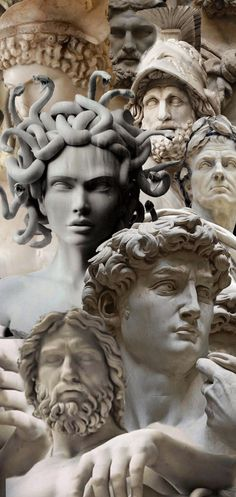
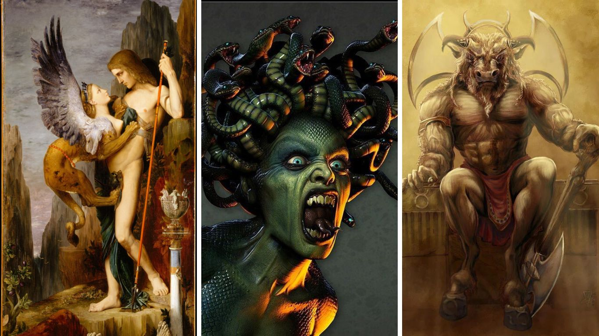
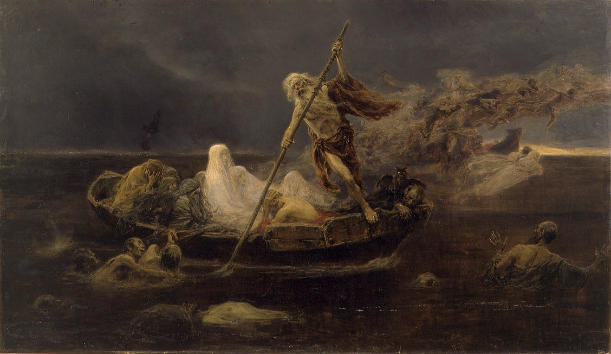

MITOLOGIA GRIEGA
La mitología griega son una serie de explicaciones que los habitantes de la Antigua Grecia tenían para comprender el mundo que les envolvía. Eran las creencias que los griegos tenían sobre aspectos como la creación del universo, el origen del hombre, la inteligencia humana, el sentimiento del amor y de la guerra, etcétera. Todas las condiciones del ser humano eran explicadas en estos mitos que reunían a grandes dioses que vivían en el Olimpo y se encargaban de gestionar todo lo que ocurría en el mundo.
Se conoce como mitología griega al conjunto de relatos, mitos y leyendas pertenecientes a la religión de la Antigua Grecia. La mitología griega siguió formando parte de la cultura occidental a través de referencias literarias, filosóficas, científicas y artísticas.
Originalmente, los relatos mitológicos se transmitían de manera oral, de generación en generación. Durante siglos, se conformaron diferentes versiones que, con el tiempo, llegaron a constituir un corpus coherente sobre la historia y la genealogía del panteón de dioses y héroes griegos. Durante la Época clásica y el Período Helenístico de la historia de Grecia, estos relatos fueron recogidos en textos escritos y constituyeron la base de lo que actualmente se conoce como literatura griega. Su estudio es materia de interés para diversas disciplinas, desde las letras y la filosofía, hasta la historia, la antropología y el psicoanálisis.
Cabe destacar que la mitología griega recogía numerosos elementos tradicionales y religiosos de la Grecia Antigua, pero también era entendida como ficción por muchos de los filósofos de la antigüedad, como Platón (siglos V-IV a.C.). De todas formas, podía ser considerada valiosa fuente de enseñanzas y de relatos alegóricos, tal como lo es hoy en día para nosotros.
DIOSES GRIEGOS
- Zeus: >el dios del cielo
- Hera:la diosa del Olimpo
- Hefesto:el dios del fuego y de la metalurgia
- Apolo:el protector de la música y de la medicina
- Afrodita: la diosa del amor y de la belleza
- Hades: el dios de los muertos
- Poseidón: dios del mar
- Ares: dios de la guerra
- Atenea: la diosa de la sabiduría
HEROES
La mitología griega se caracteriza por la abundancia de figuras heroicas. Los héroes eran semidioses: superaban a los hombres en poder, fuerza y audacia, pero se diferenciaban de los dioses por ser mortales. Eran ejemplo de virtudes y participaban en hazañas increíbles. Tenían una relación con lo divino, ya sea por ascendencia o por haber sido favorecidos por algún dios o alguna diosa. Los héroes pertenecían a un pasado memorable, no tan remoto como el tiempo de los dioses. Muchas familias nobles de las diferentes polis griegas decían descender de algún héroe mítico, y varias ciudades reclamaban haber sido fundadas por uno de ellos.
Cada héroe tenía su propia historia y su personalidad. Pero todos compartían algunas características comunes, como el deseo de la fama imperecedera y la búsqueda de la vida heroica.
- Perseo. Fundador de la ciudad de Micenas, fue un héroe valiente que se enfrentó a diversos monstruos. Era hijo del dios Zeus y de la mortal Dánae, y a la vez hermano y bisabuelo de Heracles. Entre sus hazañas, Perseo decapitó a la gorgona Medusa y salvó a la princesa Andrómeda del monstruo Ceto.
- Heracles. Hijo ilegítimo de Zeus y la reina Alcmena, era odiado desde su nacimiento por Hera, quien lo sometió a numerosos trabajos. Entre esos trabajos casi imposibles se incluían vencer al León de Nemea, a la Hidra de Lemnos, al Cerbero de los infiernos, entre otros.
- Teseo. Era el rey de Atenas, de ascendencia divina, a quien se le atribuyen muchas hazañas, entre las más importantes, la liberación de la isla de Creta del Minotauro: un ser mitológico mitad hombre y mitad toro. El monstruo devoraba a sus héroes y doncellas vírgenes, y habitaba en el corazón de un laberinto. Teseo venció a la bestia y volvió a salir del laberinto guiado por el hilo que la princesa Ariadna le entregó. Luego se casó con ella.
- Jasón. Hijo de Esón, rey legítimo de Yolcos, era el líder de los argonautas (un grupo de héroes míticos). Jasón partió en una misión por el vellocino de oro (un objeto sagrado y mágico), para recuperar el lugar en el trono que le correspondía.
ALGUNOS MOSTRUOS DE LA MITOLOGIA GRIEGA SON:

- CERBERO: El sabueso de Hades a veces se muestra con dos cabezas y varias partes del cuerpo, pero la forma más familiar es el Cerbero de tres cabezas.
- CÍCLOPE: Estos gigantes, con un ojo redondo en el centro de la frente, consideran comida a los humanos.
- ESFINGE: La esfinge es más conocida por los monumentos sobrevivientes del antiguo Egipto, pero también aparece en el mito griego de la ciudad de Tebas, en la historia de Edipo. Esta esfinge, hija de Typhon y Echidna, tenía la cabeza y el pecho de una mujer, alas de pájaro, garras de león y cuerpo de perro.
- MEDUSA: Fue una vez una mujer hermosa que sin saberlo atrajo la atención del dios del mar Poseidón. Cuando el dios decidió aparearse con ella, estaban en el templo de Atenea. Y ésta estaba furiosa. Como siempre, culpando a la mujer mortal, se vengó convirtiendo a Medusa en un monstruo tan horrible que una sola mirada a su rostro convertiría a un hombre en piedra.
- ARPÍAS: estos monstruos mujeres pájaro que contaminan su comida todos los días hasta que los hijos de Boreas los llevan a las islas Strophades.
- MINOTAURO: El minotauro era una terrible bestia devoradora de hombres, mitad hombre y mitad toro.

Eran habitantes y colaboradoras de Hades: Hécate, las Gorgonas, las Greas, las Erinias, las Arpías, Tanatos e Hipnos.
Las regiones del hades
Se diferenciaban en el hades algunas regiones:
- La Isla de los Bienaventurados: donde iban las almas selectas como las de algunos héroes.
- Los Campos Elíseos: el lugar de las almas de los buenos y justos.
- El Tártaro: verdadero Infierno (como se considera actualmente), donde estaban los gigantes que se habían alzado contra los Dioses, entre otros como Sísifo, Tántalo, Ixión, las Danaides.
Esta región estaba separada del resto por una triple muralla, debajo de la cual corría el río Flegetón (“río de Fuego”) y sumida en la más completa oscuridad.
Caronte y el río Aqueronte
Al morir las personas, sus almas se reunían al borde del río Aqueronte (“río de la aflicción”) desde donde eran trasladados a la otra orilla por el barquero Caronte, mediante el pago de un óbolo.
Allí se encontraban con un bosque de álamos de Perséfone y las puertas del Hades custodiadas por el Can Cerbero (perro de tres cabezas) que permitía en acceso pero no la salida.
Juzgadas por los jueces infernales, Radamanto, Minos y Eaco, las almas iban a los lugares que les correspondían.
ESTRADA GARCÍA ANDREA VALERIA 21M11